Aim Short to Reach Far
Goal Distance Underestimates
Your Frozen World Model
Tsinghua University
Abstract
Visual world models predict action outcomes, while planners commonly score those outcomes by their distance to the encoded goal image. We show that this target can limit control even with exact dynamics and globally optimal short-horizon search: reaching a goal may require actions that initially move away from it. With frozen LeWM models, intermediate targets substantially improve action synthesis and recorded-action ranking on Cube, PushT, Reacher, and TwoRoom. Learned targets and targets drawn from observed experience both produce these gains. We introduce Anchored Planning, which retrieves a recorded segment whose start and end resemble the current and goal observations, then aims at an observation shortly after its start. The frozen model scores actions toward this target from the current state. Without additional training, observed targets outperform the released LeWM on every task in our long-range evaluation. Additional final-goal search falls short of the same gains. Target placement and retrieval timing further shape success, while lower successor-prediction error need not translate into better control. Changing only the target lets the same frozen model and planner reach goals that final-goal scoring misses.
Anchored Planning in action
AP-rank predicts how recorded actions will behave from the current state. These examples compare it with Direct after the start is displaced.
4 AP-rank demonstrations
Cube
Goal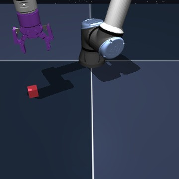
PushT
Goal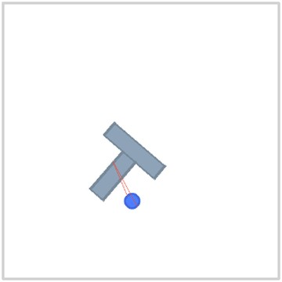
Cube
Goal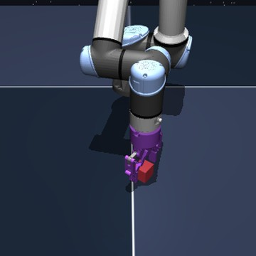
PushT
Goal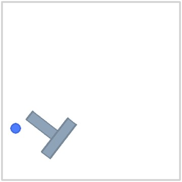
Cube
Goal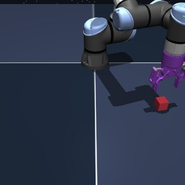
Reacher
Goal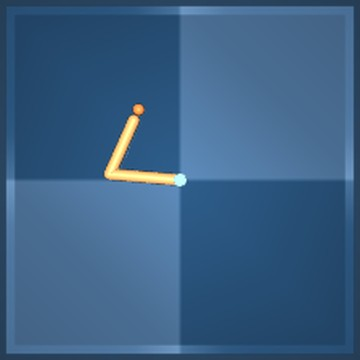
TwoRoom
Goal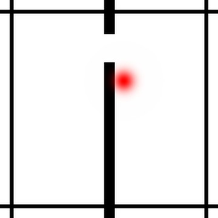
PushT
Goal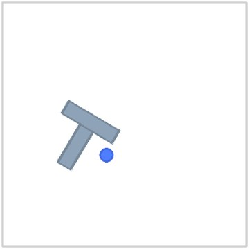
Cube
Goal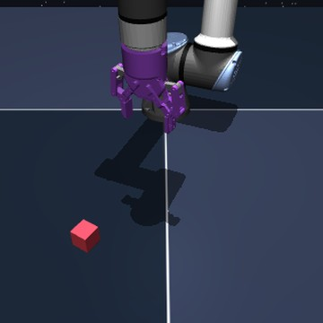
Reacher
Goal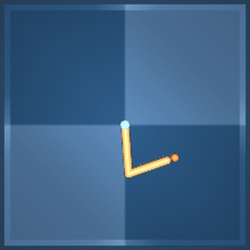
TwoRoom
Goal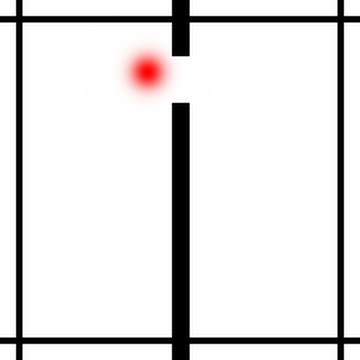
About these replays
The videos replay saved physical states at 20 actions per second. A controller’s last state stays on screen after it stops. The green shape in PushT marks the query’s goal pose.
AP-rank shows the first two query-ordered successes paired with Direct failures under the first assigned perturbation on PushT and Cube, with more than ten AP-rank actions. AP-CEM shows the first two successes paired with final-goal failures at standard starts on each task, with more than ten AP-CEM actions. These are selected examples; the full success rates are reported below and in the paper.
Control improves when the target changes
The same observed target supports action selection and action synthesis with frozen LeWM models.
Action selection
67.0% → 83.8%
Final-goal ranking to AP-rank
Action synthesis
9.2% → 59.8%
Final-goal CEM to AP-CEM
Mean success at standard starts. Within each action rule, the comparison changes the target while keeping the frozen model and search settings fixed.
Action selection success (%)
| Task | Final goal | Learned | Observed |
|---|---|---|---|
| Cube | 62.5 | 91.4 | 73.4 |
| PushT | 25.8 | 54.7 | 66.4 |
| Reacher | 90.6 | 95.3 | 96.9 |
| TwoRoom | 89.1 | 96.9 | 98.4 |
| Mean | 67.0 | 84.6 | 83.8 |
Action synthesis success (%)
| Task | Final goal | Learned | Observed |
|---|---|---|---|
| Cube | 7.0 | 62.5 | 46.9 |
| PushT | 2.3 | 52.3 | 69.5 |
| Reacher | 25.8 | 54.7 | 75.8 |
| TwoRoom | 1.6 | 53.1 | 46.9 |
| Mean | 9.2 | 55.7 | 59.8 |
Both intermediate targets improve on final-goal scoring. Observed targets give the higher mean for action synthesis; learned and observed targets have similar means for action selection.
The gap grows beyond the shortest goal offsets
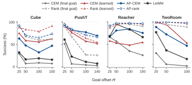
More search does not recover the same gains
Observed-target CEM with two iterations exceeds thirty-iteration final-goal CEM on every task in the measured standard-start budget sweep.
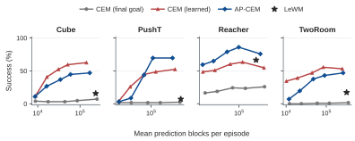
Evaluation details
Table 1 uses 128 paired queries per task at the main goal offsets. Means weight the four tasks equally. The goal-offset sweep keeps each recorded start and preserves the task’s ratio of action allowance to goal offset. LeWM leads at some shorter Reacher offsets.
Prediction work counts predicted five-action blocks, including early stopping. It measures model prediction work, not total elapsed runtime. Full protocols, perturbation results, and target-quality comparisons are in the paper.
Where to aim changes which action looks best
Reaching a goal can require first moving away from it. A short-horizon planner can reject the necessary action even when its prediction is exact.
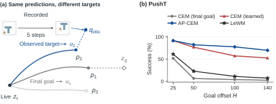
Use experience to choose a target, then predict from the current state
Anchored Planning retrieves a recorded segment whose start and distant endpoint resemble the current and goal images. The observation shortly after the segment’s start becomes the target. The frozen model then evaluates how actions approach it.
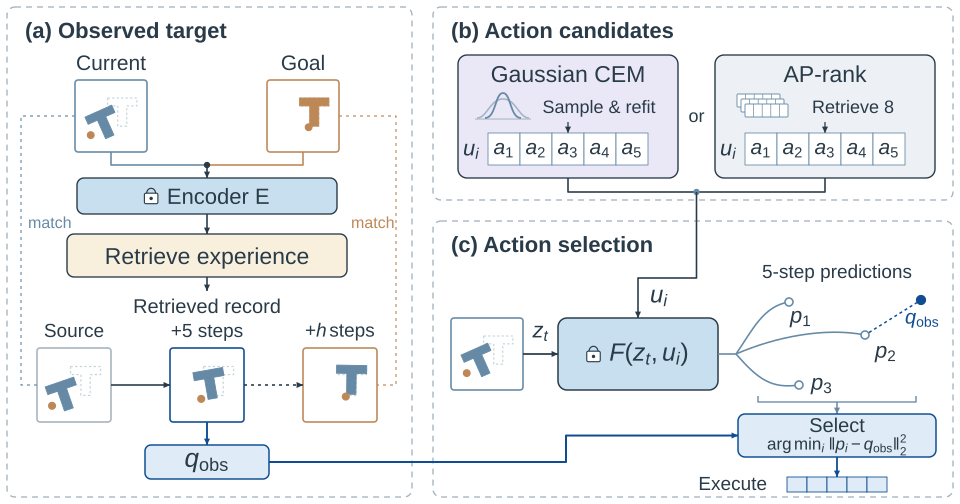
Paper and code
The repository contains the controllers, per-episode measurements, replay states, and a command to reproduce Table 1.
Citation
@misc{liu2026aimshort,
title = {Aim Short to Reach Far: Goal Distance Underestimates Your Frozen World Model},
author = {Xvyuan Liu and Jianjie Fang and Chen Gao and Yong Li},
year = {2026},
url = {https://github.com/daybraeklaxry/Aim-Short-to-Reach-Far}
}